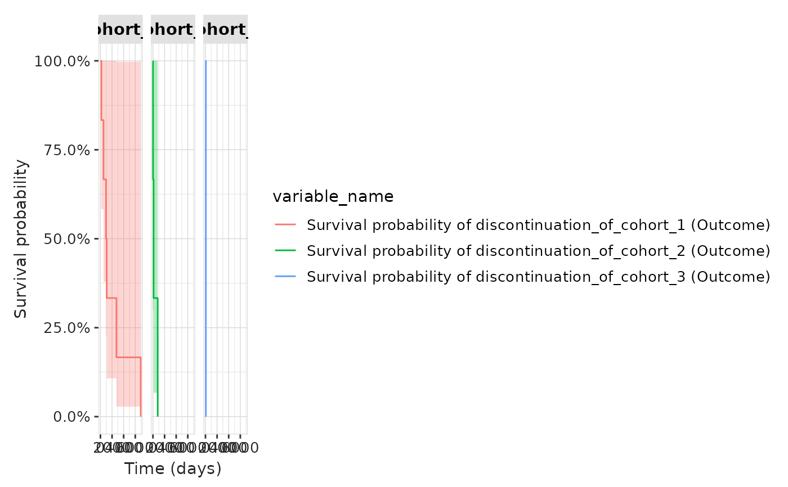

Summarise discontinuation as a survival analysis
Source:R/summariseDiscontinuationAsSurvival.R
summariseDiscontinuationAsSurvival.RdsummariseDiscontinuationAsSurvival() analyses discontinuation as a survival analysis
using the CohortSurvival
package. The function assumes that each cohort entry is a continuous
treatment era. Discontinuation will be assessed as a survival analysis with
index date: start of the drug treatment era (cohort_start_date) and event
of interest: first day without exposure (the day after
cohort_end_date). An event is only recorded if the individual remains under
observation on that day. The analysis will use
estimateSingleEventSurvival() or estimateCompetingRiskSurvival() depending
if competingOutcomeCohortTable is provided or not.
Usage
summariseDiscontinuationAsSurvival(
cohort,
cohortId = NULL,
followUpDays = Inf,
censorDate = NULL,
restrictToFirstDiscontinuation = TRUE,
strata = list(),
competingOutcomeCohortTable = NULL,
competingOutcomeCohortId = NULL,
eventGap = 30,
estimateGap = 1
)Arguments
- cohort
A cohort_table object.
- cohortId
A cohort definition id to restrict by. If NULL, all cohorts will be included.
- followUpDays
Number of days to follow up individuals (lower bound 1, upper bound Inf).
- censorDate
if not NULL, an individual's follow up will be censored at the given date.
- restrictToFirstDiscontinuation
Whether to consider only the first discontinuation episode or all of them.
- strata
A list of variables to stratify results. These variables must have been added as additional columns in the cohort table.
- competingOutcomeCohortTable
The competing outcome cohort table of interest.
- competingOutcomeCohortId
Competing outcome cohorts to include. It can either be a cohort_definition_id value or a cohort_name. Multiple ids are allowed.
- eventGap
Days between time points for which to report survival events, which are grouped into the specified intervals.
- estimateGap
Days between time points for which to report survival estimates. First day will be day zero with risk estimates provided for times up to the end of follow-up, with a gap in days equivalent to eventGap.
Value
A <summarised_result> object that contains the probability to not
discontinue over time and the summary statistics. Use
tableDiscontinuationAsSurvival() and plotDiscontinuationAsSurvival() to visualise the
results.
Examples
# \donttest{
library(DrugUtilisation)
cdm <- mockDrugUtilisation()
result <- summariseDiscontinuationAsSurvival(cdm$cohort1)
#> ℹ Calculating discontinuation for cohort_1.
#> ℹ Subsetting table to cohort of interest.
#> ℹ Preparing discontinuation (outcome) cohort.
#> ℹ Estimate single event survival for cohort: cohort_1 and outcome:
#> discontinuation_of_cohort_1.
#> ℹ Getting survival for target cohort 'cohort_1' and outcome cohort
#> 'discontinuation_of_cohort_1'
#> Getting overall estimates
#> `eventgap`, `outcome_washout`, `censor_on_cohort_exit`, `follow_up_days`, and
#> `minimum_survival_days` cast to character.
#> ✔ Discontinuation analysis for cohort_1 completed in 3s.
#> ℹ Calculating discontinuation for cohort_2.
#> ℹ Subsetting table to cohort of interest.
#> ℹ Preparing discontinuation (outcome) cohort.
#> ℹ Estimate single event survival for cohort: cohort_2 and outcome:
#> discontinuation_of_cohort_2.
#> ℹ Getting survival for target cohort 'cohort_2' and outcome cohort
#> 'discontinuation_of_cohort_2'
#> Getting overall estimates
#> `eventgap`, `outcome_washout`, `censor_on_cohort_exit`, `follow_up_days`, and
#> `minimum_survival_days` cast to character.
#> ✔ Discontinuation analysis for cohort_2 completed in 2s.
#> ℹ Calculating discontinuation for cohort_3.
#> ℹ Subsetting table to cohort of interest.
#> ℹ Preparing discontinuation (outcome) cohort.
#> ℹ Estimate single event survival for cohort: cohort_3 and outcome:
#> discontinuation_of_cohort_3.
#> ℹ Getting survival for target cohort 'cohort_3' and outcome cohort
#> 'discontinuation_of_cohort_3'
#> Getting overall estimates
#> `eventgap`, `outcome_washout`, `censor_on_cohort_exit`, `follow_up_days`, and
#> `minimum_survival_days` cast to character.
#> ✔ Discontinuation analysis for cohort_3 completed in 2s.
plotDiscontinuationAsSurvival(result)
#> Warning: Removed 3 rows containing missing values or values outside the scale range
#> (`geom_ribbon()`).

tableDiscontinuationAsSurvival(result)
#> cdm_name, cohort_name, cohort_survival_version, competing_outcome,
#> estimate_gap, event_gap, and follow_up_days are missing in `columnOrder`, will
#> be added last.
cohort_1
cohort_2
cohort_3
# }